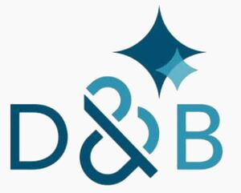

Trade Mark Journal No.2025/037 12 September 2025
WO0000001872825 (9,35,42)
Office of origin: United States of America

The mark consists of the stylized word "D&B" where the "D" is in a darker shade of blue and the "B" is in a lighter shade of blue and the ampersand is stylized, with darker and lighter shades of blue, derived from the letters "D" and "B", all below two overlapping four point stars where the larger star is a darker shade of blue and the smaller star is a lighter shade of blue.
the mark contains the colour blue.
The mark consists of the stylized word "D&B" where the "D" is in a darker shade of blue and the "B" is in a lighter shade of blue and the ampersand is stylized, with darker and lighter shades of blue, derived from the letters "D" and "B", all below two overlapping four point stars where the larger star is a darker shade of blue and the smaller star is a lighter shade of blue.
- Class 9
- Downloadable chatbot software using artificial intelligence for simulating conversations; downloadable chatbot software using artificial intelligence for replying to questions from users concerning business information and business relationship information and for generating reports related to same; downloadable chatbot software using artificial intelligence for replying to questions from users concerning business credit risk and business credit analysis and for generating reports related to same; downloadable chatbot software using artificial intelligence for replying to questions from users concerning business intelligence information and for generating business intelligence reports; downloadable chatbot software using artificial intelligence for replying to questions from users concerning business financial reports, financial data, credit history, and credit rating reports; downloadable chatbot software using artificial intelligence for replying to questions from users concerning supply chain management and for generating reports related to same; downloadable chatbot software using artificial intelligence for replying to questions from users concerning marketing strategies and generating customized market reports; downloadable software using artificial intelligence for data analysis, data management; downloadable software for use in the field of procurement and supply chain management; downloadable software application for collecting, managing, analyzing, forecasting and distributing data for use in fields of marketing effectiveness, marketing productivity, sales reporting, sales coaching, sales training, sales planning, sales lead generation, sales and marketing analytics, customer analytics, customer data, supply chain procurement, compliance, credit management, and risk analysis.
- Class 35
- Providing information, using artificial intelligence, pertaining to procurement, buying, selling and tendering information and opportunities relating to goods and services; business information services, supply chain management information services, and business risk management information services; business data analysis; compiling and analyzing data for business purposes; data processing services; analyzing and compiling business data using artificial intelligence; providing business and marketing information, using artificial intelligence, in fields of marketing effectiveness, marketing productivity, sales reporting, sales planning, sales lead generation, sales and marketing analytics, customer marketing analytics, customer marketing data, supply chain procurement, and business practices, operation and management related to regulatory compliance, and business risk analysis.
- Class 42
- Providing temporary use of online non-downloadable chatbot software using artificial intelligence for simulating conversations; providing temporary use of online non-downloadable chatbot software using artificial intelligence for replying to questions from users concerning business information and business relationship information and for generating reports related to same; providing temporary use of online non-downloadable chatbot software using artificial intelligence for replying to questions from users concerning business credit risk and business credit analysis and for generating reports related to same; providing temporary use of online non-downloadable chatbot software using artificial intelligence for replying to questions from users concerning business intelligence information and for generating business intelligence reports; providing temporary use of online, non-downloadable software using artificial intelligence for replying to questions from users concerning business financial reports, financial data, credit history, and credit rating reports; providing temporary use of online, non-downloadable software using artificial intelligence for replying to questions from users concerning supply chain management and for generating reports related to same; providing temporary use of online, non-downloadable software using artificial intelligence for replying to questions from users concerning marketing strategies and generating customized market reports; artificial intelligence software, namely, providing temporary use of on-line non-downloadable software using artificial intelligence for data analysis, data management; providing online non-downloadable software for use in the field of procurement and supply chain management; providing temporary use of a web-based non-downloadable software application for collecting, managing, analyzing, forecasting and distributing data for use in fields of marketing effectiveness, marketing productivity, sales reporting, sales coaching, sales training, sales planning, sales lead generation, sales and marketing analytics, customer analytics, customer data, supply chain procurement, compliance, credit management, and risk analysis; cloud-based software services featuring temporary use of non-downloadable software utilizing artificial intelligence for collecting, managing, analyzing, forecasting and distributing data for use in fields of marketing effectiveness, marketing productivity, sales reporting, sales coaching, sales training, sales planning, sales lead generation, sales and marketing analytics, customer analytics, customer data, supply chain procurement, compliance, credit management, and risk analysis.
Dun & Bradstreet International, Ltd.
Representative: Mark J. Liss Leydig, Voit & Mayer, Ltd., Two Prudential Plaza,, 180 N. Stetson Ave, Suite 4900, Chicago IL 60601, UNITED STATES OF AMERICA